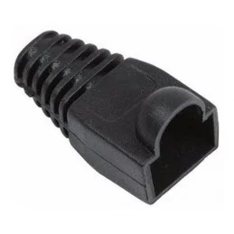
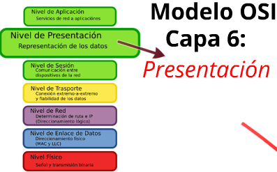
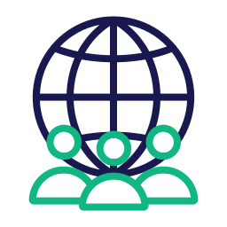
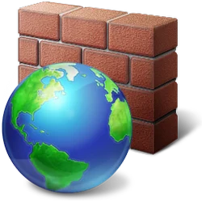
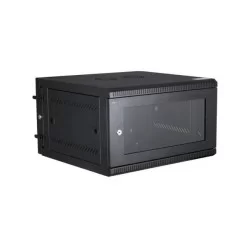
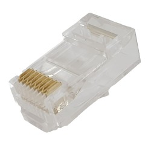

A continuación encontrarás las definiciones de las principales palabras y expresiones relacionadas con la a
Arquitectura de Red
Es un conjunto de reglas y protocolos que guían el diseño y la implementación de sistemas de comunicación de datos, incluyendo la disposición física de los dispositivos de red, la topología de la red, los protocolos de comunicación y las tecnologías utilizadas para la transmisión de datos

ARPANET
La ARPANET fue la precursora de Internet, desarrollada por la Agencia de Proyectos de Investigación Avanzada del Departamento de Defensa de los Estados Unidos (DARPA) en la década de 1960. Fue la primera red en utilizar conmutación de paquetes y sentó las bases para el desarrollo de Internet
Conexión Malla
Es una topología de red en la que cada dispositivo está conectado directamente a todos los demás dispositivos de la red, lo que crea múltiples rutas para la transmisión de datos y aumenta la redundancia y la confiabilidad de la red

Cisco
Es una empresa multinacional especializada en tecnologías de redes de computadoras, incluyendo hardware, software y servicios.Una empresa líder en el desarrollo y fabricación de equipos de redes, incluyendo routers, switches, y otros dispositivos de conectividad
Conexión Remota
Es la capacidad de acceder y controlar un dispositivo o sistema desde otro lugar, a través de una red, como Internet. Es la capacidad de acceder a una red desde una ubicación externa utilizando tecnologías de comunicación como Internet, permitiendo a los usuarios conectarse a recursos de la red de forma remota.
Capa de Aplicación
Es la capa más alta en el modelo OSI (Open Systems Interconnection), responsable de proporcionar servicios de red directamente a las aplicaciones del usuario, como el correo electrónico, la transferencia de archivos y la navegación web

Cable UTP
Un cable de par trenzado sin blindaje (Unshielded Twisted Pair) es un tipo de cable de red comúnmente utilizado para transmitir datos en redes Ethernet. Consiste en pares de cables de cobre trenzados que reducen la interferencia electromagnética.
Canaleta
Una canaleta es un conducto o canal utilizado para alojar y proteger cables eléctricos o de red. Pueden ser de plástico, metal o PVC, y se instalan en paredes o techos para organizar y ocultar los cables de manera segura y ordenada
Capuchón
Un capuchón es una cubierta protectora que se coloca en el extremo de un conector, como un conector RJ45, para proteger los pines y evitar daños accidentales. También puede referirse a una cubierta protectora para componentes electrónicos

Cooler
Un cooler, o ventilador de refrigeración, es un dispositivo electromecánico utilizado para disipar el calor generado por componentes electrónicos, como procesadores o tarjetas gráficas, mediante la circulación de aire. Se utilizan comúnmente en computadoras y otros dispositivos electrónicos para evitar el sobrecalentamiento
Cortacable
Un cortacable es una herramienta diseñada para cortar cables de manera precisa y limpia, sin dañar los conductores internos. Se utilizan comúnmente en instalaciones de cableado para cortar cables UTP, coaxiales u otros tipos de cables de red
Crimpadora
Una crimpadora es una herramienta utilizada para fijar conectores a los extremos de cables mediante un proceso de crimpado. Se utiliza comúnmente en instalaciones de cableado de red para conectar conectores RJ45 a cables UTP, garantizando una conexión segura y estable

Capa de Presentación
Es la capa del modelo OSI que se encarga de la representación de datos, incluyendo la codificación, compresión de datos incluyendo la codificación y cifrado de la información para su transmisión a través de la red.

Capa de Transporte
Una capa del modelo OSI que se encarga de la entrega de datos de manera confiable y ordenada entre dispositivos de origen y destino, utilizando protocolos como TCP (Protocolo de Control de Transmisión) y UDP (Protocolo de Datagramas de Usuario)

Capa de Red
Una capa del modelo OSI que se encarga del enrutamiento y la conmutación de datos a través de la red, utilizando direcciones IP para identificar los dispositivos de origen y destino

Capa de Enlace de Datos
Una capa del modelo OSI que se encarga de la transferencia de datos confiable entre dispositivos directamente conectados, utilizando direcciones MAC para identificar los dispositivos de red
Capa Física
Una capa del modelo OSI que se encarga de la transmisión física de datos a través del medio de transmisión, como cables de cobre, fibra óptica o señales inalámbricas

Capa de Sesión
Una capa del modelo OSI que se encarga de establecer, mantener y finalizar sesiones de comunicación entre dispositivos de red, garantizando la sincronización y el control de flujo de datos

DARPA
La Agencia de Proyectos de Investigación Avanzada del Departamento de Defensa de los Estados Unidos, responsable del desarrollo de tecnologías innovadoras para uso militar y civil, incluyendo la creación de la ARPANET
Direccionamiento IP
Es un identificador numérico único asignado a cada dispositivo conectado a una red que utiliza el protocolo de Internet (IP)
Dominio en Correos
Una parte de una dirección de correo electrónico que identifica el servidor de correo electrónico al que está asociado el buzón de correo, como "gmail.com" o "hotmail.com"
Ethernet
Una tecnología de red de área local (LAN) que utiliza cables de par trenzado para la transmisión de datos a velocidades de hasta gigabits por segundo
Enlace de Datos
Una conexión física o lógica entre dispositivos de red que permite la transferencia de datos, incluyendo cables, conexiones inalámbricas y enlaces de fibra óptica

Firewall
Un firewall es un sistema de seguridad que controla y monitorea el tráfico de red entrante y saliente, permitiendo o bloqueando ciertos tipos de comunicaciones basadas en reglas de seguridad predefinidas. Los firewalls protegen las redes y los sistemas informáticos contra amenazas externas e internas

Faceplate
Una faceplate es una placa frontal que se utiliza para montar y organizar conectores de red, como conectores RJ45, en una pared o superficie. Proporciona un punto de acceso para conectar dispositivos de red, como computadoras o teléfonos IP, a la infraestructura de red
Gabinete
Un gabinete es una estructura o armario utilizado para alojar y proteger equipos electrónicos y de red, como switches, routers, servidores o equipos de telecomunicaciones. Los gabinetes suelen tener puertas y paneles laterales que proporcionan acceso seguro a los equipos y permiten la ventilación adecuada

Gateway
Un gateway es un dispositivo o software que actúa como punto de entrada o salida entre dos redes diferentes, permitiendo la comunicación entre ellas. Los gateways pueden realizar funciones de traducción de protocolos, enrutamiento de datos y filtrado de tráfico para facilitar la interoperabilidad entre redes heterogéneas
HTTP
Protocolo de Transferencia de Hipertexto, utilizado para la transmisión de información en la World Wide Web, especialmente para el acceso a páginas web y recursos relacionados
HTTPS
Protocolo de Transferencia de Hipertexto Seguro, una versión segura del protocolo HTTP que utiliza cifrado SSL/TLS para proteger la privacidad y la integridad de los datos transmitidos

HTML
HTML significa Lenguaje de Marcado de Hipertexto. Es el lenguaje de marcado estándar para crear páginas web y aplicaciones web.HTML proporciona la estructura para las páginas web utilizando etiquetas de marcado para definir elementos como encabezados, párrafos, listas, enlaces, imágenes y más
Internet
Una red global de redes de computadoras interconectadas que utilizan el protocolo TCP/IP para la comunicación de datos, proporcionando acceso a una amplia variedad de servicios y recursos
Jack
Los jacks son conectores hembra utilizados para conectar dispositivos de red, como computadoras, teléfonos IP o cámaras de seguridad, a una red Ethernet. Los jacks pueden ser modulares, como los conectores RJ45, o de otros tipos, y proporcionan una conexión física entre el dispositivo y la infraestructura de red
LAN
Una red de área local es una red de computadoras que abarca un área limitada, como un hogar, una escuela, un edificio de oficinas o un grupo de edificios cercanos. Las LAN suelen utilizarse para la comunicación de datos entre dispositivos dentro de un área geográfica limitada
Multitoma
Un multitoma es un dispositivo que permite conectar múltiples dispositivos electrónicos a una única toma de corriente. También conocido como regleta o enchufe múltiple, el multitoma proporciona varias salidas de corriente eléctrica para alimentar equipos como computadoras, impresoras, cargadores y otros dispositivos
Modelo de Referencia ISO
Un marco de referencia desarrollado por la Organización Internacional de Normalización (ISO) que describe los aspectos funcionales de los sistemas de comunicación de datos, incluyendo el modelo OSI
Modelo OSI
Modelo de Interconexión de Sistemas Abiertos, un modelo conceptual que describe las funciones de comunicación de datos en una red de computadoras, dividido en siete capas
Normativa 568A y 568B
Las normativas 568A y 568B son estándares que establecen el orden de los cables en conectores RJ45 para redes Ethernet. Estas normativas especifican cómo deben ser cableados los pares de cables en un conector RJ45 para garantizar la correcta transmisión de datos en una red Ethernet
NCP
Es un protocolo de red utilizado por Novell NetWare para la comunicación entre clientes y servidores. NCP permite a los clientes de NetWare acceder y utilizar recursos compartidos en servidores NetWare

Nodo
Es un punto de conexión en una red donde los dispositivos pueden enviar, recibir o reenviar datos.Un dispositivo o punto de conexión en una red de computadoras que puede recibir, enviar, almacenar o enrutar datos, como computadoras, impresoras o routers

Organizador de cables
Un organizador de cables es un dispositivo utilizado para gestionar y organizar los cables en una instalación, como un rack o un gabinete. Los organizadores de cables pueden ser bandejas, guías o abrazaderas que mantienen los cables ordenados y evitan enredos, facilitando el mantenimiento y la identificación de cables

Patch Panel
Un patch panel es un panel de conexión que facilita la terminación y gestión de cables en una red. Los patch panels suelen montarse en un rack o gabinete y proporcionan puntos de conexión para cables que se conectan a dispositivos de red, como switches, routers o servidores
Protocolo
Un protocolo es un conjunto de reglas y convenciones que gobiernan la comunicación entre dispositivos en una red de computadoras. Estas reglas especifican el formato, el orden y el significado de los mensajes que se intercambian entre los dispositivos, así como los pasos que deben seguirse para iniciar, mantener y finalizar una comunicación exitosa
Protocolo TCP/IP
Es el conjunto de protocolos de comunicación utilizado en Internet para la transmisión de datos.Un conjunto de protocolos de comunicación utilizados para la transmisión de datos en Internet y otras redes, incluyendo TCP, IP, UDP, HTTP, y otros
Protocolo de Internet
Es el conjunto de protocolos que permite la comunicación en Internet, incluyendo IP, ICMP, TCP y UDP, entre otros. Protocolo de comunicación utilizado para la transmisión de datos a través de Internet, utilizando direcciones IP para identificar los dispositivos de origen y destino
RJ45
RJ45 es un tipo de conector estándar utilizado para redes Ethernet. Es un conector modular de ocho pines que se utiliza para conectar cables de par trenzado a dispositivos de red, como computadoras, switches, routers o paneles de conexión

Roseta
Una roseta es un punto de conexión en una pared o superficie donde se conectan los dispositivos de red, como computadoras, teléfonos IP o cámaras de seguridad. Las rosetas suelen tener un conector RJ45 que proporciona una conexión física entre el dispositivo y la infraestructura de red
Rack
Un rack es una estructura diseñada para montar y organizar equipos electrónicos en espacios de red o servidores. Los racks suelen ser de metal y tienen espacios para montar dispositivos, como switches, routers, servidores y paneles de conexión, de manera ordenada y segura
Red
Una red es un conjunto de dispositivos interconectados que pueden comunicarse entre sí y compartir recursos. Estos dispositivos pueden incluir computadoras, servidores, dispositivos de almacenamiento, impresoras, enrutadores, y otros dispositivos electrónicos
Red CICLADES
Fue una red de computadoras experimental desarrollada en Francia en la década de 1970, considerada como una de las precursoras de Internet.Una red de área amplia (WAN) experimental desarrollada en la década de 1970 en Francia, que sirvió como precursora de Internet

Router
Un router es un dispositivo de red que se utiliza para conectar diferentes redes informáticas entre sí y dirigir el tráfico de datos entre ellas. Su función principal es determinar la mejor ruta para enviar paquetes de datos desde el origen hasta el destino a través de una red, utilizando algoritmos de enrutamiento
Soporte
Un soporte es un dispositivo utilizado para sostener o montar equipos electrónicos en superficies, como paredes o techos. Los soportes pueden ser de diferentes tipos, como soportes de pared, soportes de techo o soportes de suelo, y se utilizan para fijar equipos como cámaras de seguridad, pantallas o antenas

Servidor
Un equipo de computación dedicado a proporcionar servicios o recursos a otros dispositivos de una red, como almacenamiento de archivos, acceso a internet, o correo electrónico
SMTP
SMTP, o Protocolo Simple de Transferencia de Correo (en inglés, Simple Mail Transfer Protocol), es un protocolo estándar de Internet utilizado para el envío de correos electrónicos. SMTP se encarga de la transferencia de mensajes de correo electrónico entre servidores de correo electrónico
Servidor Web
Un servidor web es un programa informático diseñado para aceptar solicitudes de clientes web (navegadores) y servirles contenido web a través del protocolo HTTP (o su versión segura, HTTPS). Este contenido puede ser cualquier cosa, desde páginas web estáticas hasta aplicaciones web dinámicas generadas por tecnologías como PHP, Python, Ruby, entre otras

Switch
Un switch, también conocido como conmutador o switch de red, es un dispositivo de red que opera en la capa 2 (capa de enlace de datos) o en la capa 3 (capa de red) del modelo OSI. Su función principal es conectar múltiples dispositivos de red, como computadoras, impresoras, servidores y otros switches, dentro de una red local (LAN), permitiendo la comunicación entre ellos

Sesión
Una sesión en el contexto de la informática y las redes se refiere a una conexión lógica establecida entre dos sistemas informáticos, como un cliente y un servidor, que permite la comunicación y el intercambio de información durante un período de tiempo específico
Tiempo Compartido
Un método de acceso a recursos de computación en el que varios usuarios comparten el uso de un mismo sistema informático, alternando entre ellos en intervalos de tiempo

TCP
Protocolo de Control de Transmisión, un protocolo de comunicación utilizado para la transmisión confiable de datos en redes de computadoras, garantizando la entrega ordenada y sin errores de los datos
UPS
Una UPS (Uninterruptible Power Supply) es un sistema de alimentación ininterrumpida que proporciona energía de respaldo en caso de cortes eléctricos. Consiste en una batería recargable y un inversor que suministra energía a los equipos conectados durante apagones o fluctuaciones de voltaje, asegurando la continuidad del funcionamiento de los dispositivos electrónicos
WAN
Red de Área Amplia, una red de computadoras que cubre un área geográfica extensa, como un país o un continente, utilizando tecnologías de comunicación como líneas telefónicas, fibra óptica o satélites para la transmisión de datos